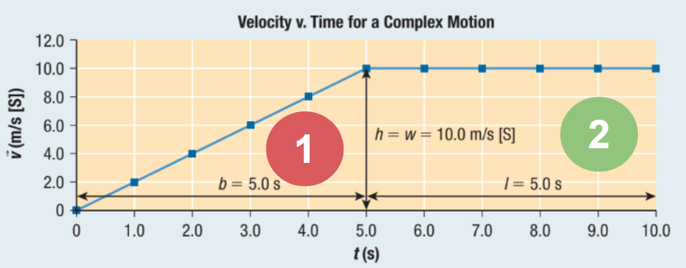
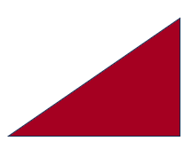

Compound Motion
When you have a change in acceleration you handle it as a new section and add up the different parts to account for the whole motion. Point out the two sections on the following graph you think the two sections are.

By analyzing the different shapes that the velocity time graph shows, we can get the total displacement of the object.

In this graph, there are two parts of the motion:

Motion with constantly changing velocity (accelerating)
Motion with constant velocity
To get the total displacement, we get the area.
 For accelerating motion:
For accelerating motion:
 For constant velocity:
For constant velocity:
Therefore,
Instantaneous VS Average Velocity
Average implies it is measured over an interval.
Instantaneous implies it is measured at a specific moment in time.